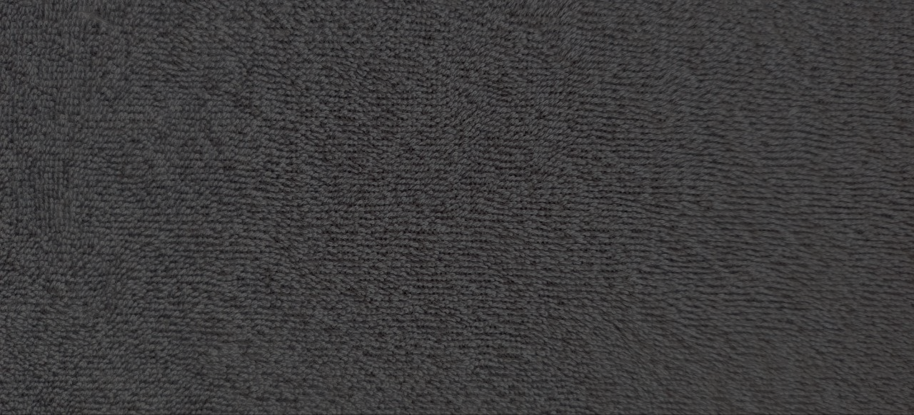
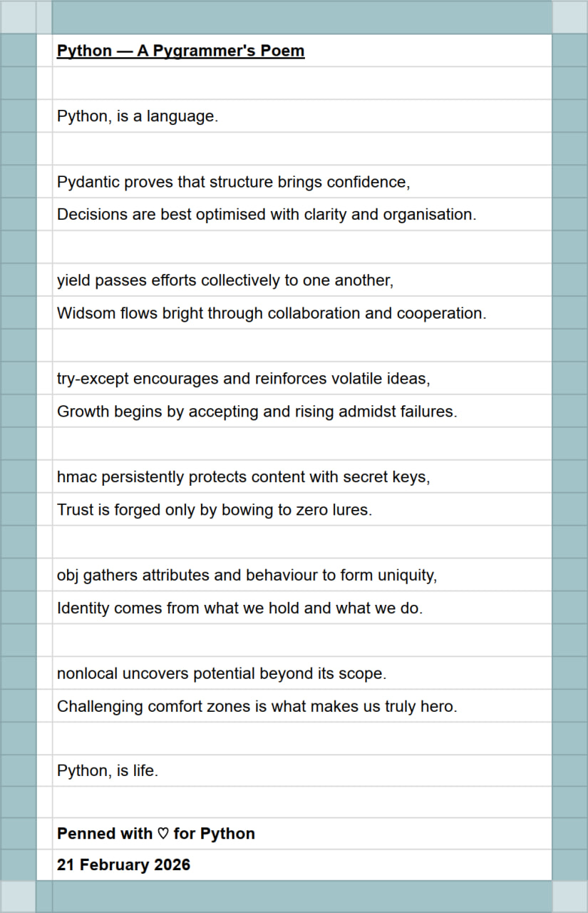

A paper portfolio in a paper porfolio
About me
I'm Nuz Zealous, a pre-U student aspiring to be a full-stack developer! - one who turns a single-line pitch into a standout product =D


I'm Nuz Zealous, a pre-U student aspiring to be a full-stack developer! - one who turns a single-line pitch into a standout product =D

